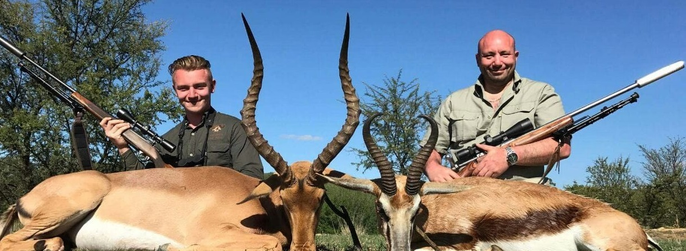

Every safari includes:
- Professional guidance from licensed Professional Hunters
- Comfortable lodge accommodation
- Delicious home-cooked meals
- Daily transportation in hunting areas
- Trophy preparation and handling
- Genuine South African hospitality

Your African Hunting Adventure Awaits
Whether you are planning your first African safari or returning to pursue new species, POG African Safaris offers customized hunting experiences tailored to your goals and expectations.
Our hunting areas in the Eastern Cape provide exceptional opportunities for a wide variety of plains game species, offering exciting stalks across diverse terrain and breathtaking scenery.
We understand that every hunter is unique. That's why we work closely with each client to create a personalized safari that matches their interests, experience level, and dream species list.
At POG African Safaris, your hunt is more than a package—it is your adventure.
Enquire